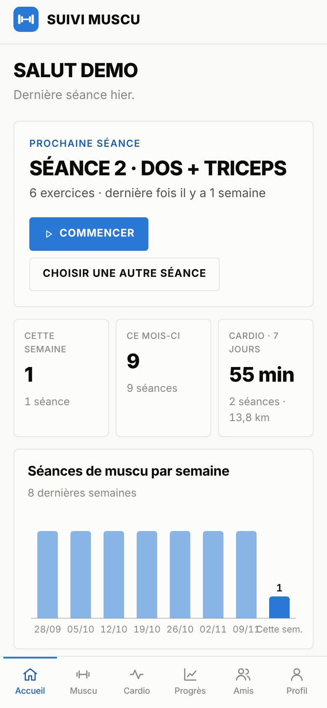

Application de suivi d'entraînement — application web installable (PWA) pour la musculation et le cardio
Suivi Muscu est une application que j'ai développée seul pour suivre les séances de musculation et de cardio d'un petit groupe d'amis. Chacun a son compte, son programme et son historique privé. Elle s'installe sur le téléphone comme une application et reste utilisable sans réseau à la salle : tout repart vers le compte au retour de la connexion.
Le programme se lance séance par séance : chaque série rappelle la fois précédente et passe au vert une fois faite, avec un chrono et les notes des dernières séances. L'historique n'est jamais réécrit.
Une courbe par exercice : volume, charge max ou répétitions, et estimation du 1RM à partir de la dernière séance.
Tapis, course, vélo, rameur… durée, distance ou vitesse (l'une calcule l'autre), avec les totaux sur 7 et 30 jours.
Plus de 170 exercices, avec les muscles travaillés dessinés sur deux silhouettes (face et dos). Recherche en français et en anglais.
Un code de partage donne accès à son suivi en lecture seule. Générer un nouveau code coupe l'accès aux anciens.
La prochaine séance, les muscles travaillés de la semaine sur la silhouette et le volume comparé à la semaine passée.
Modification du profil (nom, email…), mode clair ou sombre et quatre styles au choix. Les nouveautés s'affichent après chaque mise à jour.
Application web progressive (PWA) : installation sur Android et iPhone, saisie hors ligne, synchronisation automatique.
Le site est entièrement statique (HTML, CSS et JavaScript à modules, sans étape de build) et hébergé sur GitHub Pages. Les comptes et les données sont gérés par Supabase (base PostgreSQL) : chaque utilisateur ne peut lire et modifier que ses propres données grâce aux règles de sécurité de la base (Row Level Security), et l'inscription est limitée à une liste d'emails autorisés.
Un service worker met l'application en cache pour le mode hors ligne, et les données sont gardées localement par compte puis synchronisées. Les graphiques sont dessinés en SVG par le site lui-même, sans bibliothèque externe.
Captures réalisées avec un compte de démonstration ; cliquez sur l'image pour l'agrandir.

Le code complet et la documentation (fonctionnement, sécurité, installation) sont disponibles sur le dépôt GitHub.